第 1 章 统计及可视化
数据分析过程中，检查要用到各种各样的统计学原理。甚至某个原理本身单独都可以讲解一本书。
1.1 基本统计概念
1.1.1 第一节 描述性统计量
什么是统计学问题呢？通常为了解决一类问题，我们会观察一组和该问题相关的样本，利用总体中的这部分样本来推断总体的情况进而得到结论。在通过样本推断总体之前，我们首先需用对已有样本数据进行简单的评估和描述，针对这一需求也就引出了描述统计量这一概念。进行描述性统计时，我们最关注的数据两个层面的问题，分别是数据的集中趋势和变异分散性。
数据的集中趋势
面对少则几十个多则上千个数字，第一步通常是观察平均水平。这里介绍三个计算数据平均水平的概念。分别是均值(mean)、中位数(median)和众数(mode)。
均值：所有观察值的和除以观察的个数。通常，算数平均是最自然和常用的测度，其问题在于对异常值(outliers)非常敏感。有极端值存在时，均值不能代表样本的绝大多数情况。
中位数：所谓中位数，是指所有样本观测值由小到大排序，位于中间的一个（样本数为奇数）或者两个数据的平均值（样本数为偶数）。
通常，当数据分布对称时，中位数近似等于算数平均数；当数据正倾斜时（画出的图像向右边倾斜），中位数小于算数平均数；当数据负倾斜时（画出的图像向左倾斜），中位数大于算数平均数。因此在很多情况下，我们可以通过比较样本的均值和中位数对数据的分布对称性进行一个初判断。
众数：在样本的所有观测值中，出现频率最大（出现次数最多）的数值称为众数。这里需要说明的是，当数据量很大而且数值不会多次重复出现时众数并不能给我带来太多的信息。比如当你计算上万个基因的表达量后，得到众数最可能的是0，因为每个基因的表达值或多或少都有一些不同，这时候出现最多的就是那些没有检测的表达基因的0了。
但是在遇到类别数据而非数值型数据时，众数有很大用处，或者说众数是唯一可以用于类别数据的平均数。
在R中，上述提到的均值和中位数可以通过mean(data)和median(data)函数进行计算,而中位数可以通过modeest包的mfv(data)函数得到。
数据的变异性（离散性）
平均数显然不能说明一切问题，因为在说明样本数据时我们还必须考虑数据是不是过于分散。例如在篮球队员的投篮平均得分相同的情况下，更重要的时知道他们哪些人发挥得更加稳定。
极差(range)指的是一个样本中最大值和最小值之间的差值。在统计学中也称为全距，它能够指出数据的“宽度”（范围）。但是，它和均值一样非常容易受到极端值得影响，而且会受到样本量的明显影响。
针对极差的缺点，统计学中又引入了分位数(quantiles)的概念，通俗讲就是把数据的“宽度”细分后再去进行比较从而更好地描述数据的分布形态。分位数用三个点将从小到大排列好的数据分为四个相等部分，而这三个点也就是我们常说的四分位数，分别叫做下四分位数，中位数和上四分位数。当然，除了四分位你也可以计算十分位或者百分位。
分位数的引进能够说明数值的位置，但是无法说明某个数值在该位置出现的概率。为了说明数据的稳定程度，我们可以考虑计算每个数据值到平均数的距离（此处，你可以脑补一个高瘦形的数据曲线和矮胖形的数据曲线），但是样本中所有观测值和均值的偏差和永远是0。为了解决这种正负距离相互抵消的问题，统计学中又引入了方差(variance)和标准差(standard deviation)的概念。
所谓方差是指数值与均值距离平方数的平均数，而标准差则是方差的平方根。标准差体现了数据的变异度，标准差越小，数值和均值越近。通常，均值用μ表示，而标准差用σ表示。
在R中，可以通过quantile()计算分位数，通过var()来计算方差，通过sd()来计算标准差。
有个标准差的概念，随之而来的问题是当两个样本标准差相同但是均值相差很大时该如何做出区分。统计学中随之引入了变异系数(coefficient of variation, CV)的概念，变异系数是指样本标准差除以均值再乘100%。变异系数不会受数据尺度的影响，因此常用来进行不同样本之间变异性的比较。
在实际的数据分析中，如果要比较不同数据集(均值和标准差都不同)之间的数值，通常会引入z score的概念，z score 的计算方法是用某一数值减去均值在除以标准差。通过对原始数据进行z变换，我们将不同数据集转化为一个新的均值为0，标准差为1的分布。
计算描述性统计量
在R中，使用summary()函数方便的得到一个data frame 的各种描述性统计量。当某一列是数值型变量时，你可以得到该列数据的均值、极值、方差和分位数。
summary(iris) ## Sepal.Length Sepal.Width Petal.Length Petal.Width
## Min. :4.300 Min. :2.000 Min. :1.000 Min. :0.100
## 1st Qu.:5.100 1st Qu.:2.800 1st Qu.:1.600 1st Qu.:0.300
## Median :5.800 Median :3.000 Median :4.350 Median :1.300
## Mean :5.843 Mean :3.057 Mean :3.758 Mean :1.199
## 3rd Qu.:6.400 3rd Qu.:3.300 3rd Qu.:5.100 3rd Qu.:1.800
## Max. :7.900 Max. :4.400 Max. :6.900 Max. :2.500
## Species
## setosa :50
## versicolor:50
## virginica :50
##
##
## #查看常用的描述统计量形象化展示
所谓形象化展示就是用图示的方法来展示数据结果，比较常见的方法有条形图，箱线图，直方图等。
下面我们使用R中内置的数据Edgar Anderson’s Iris Data进行一些简单展示。
boxplot(iris$Sepal.Length)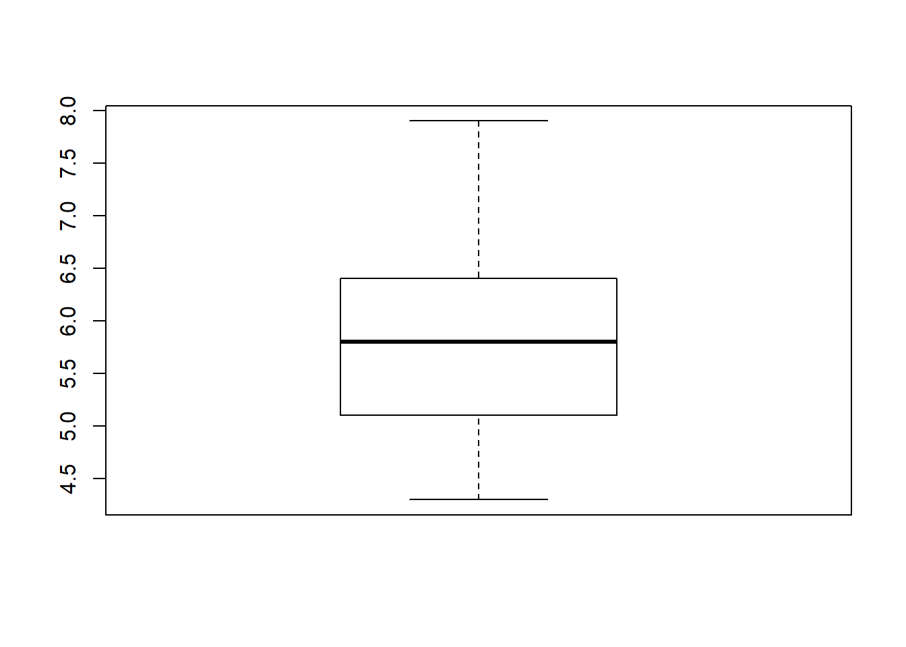
# 使用箱线图展示某一列数据的分布情况hist(iris$Sepal.Length)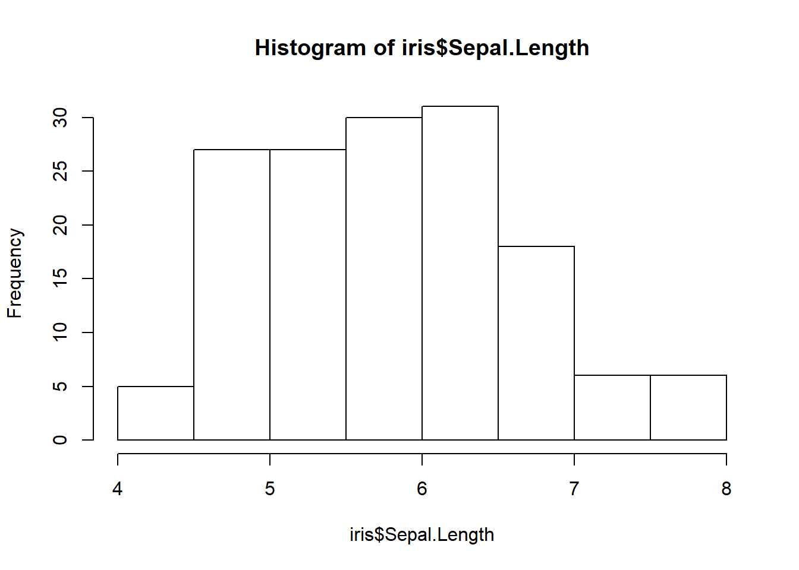
# 使用直方图展示某一列数据的分布情况plot(ecdf(iris$Sepal.Length))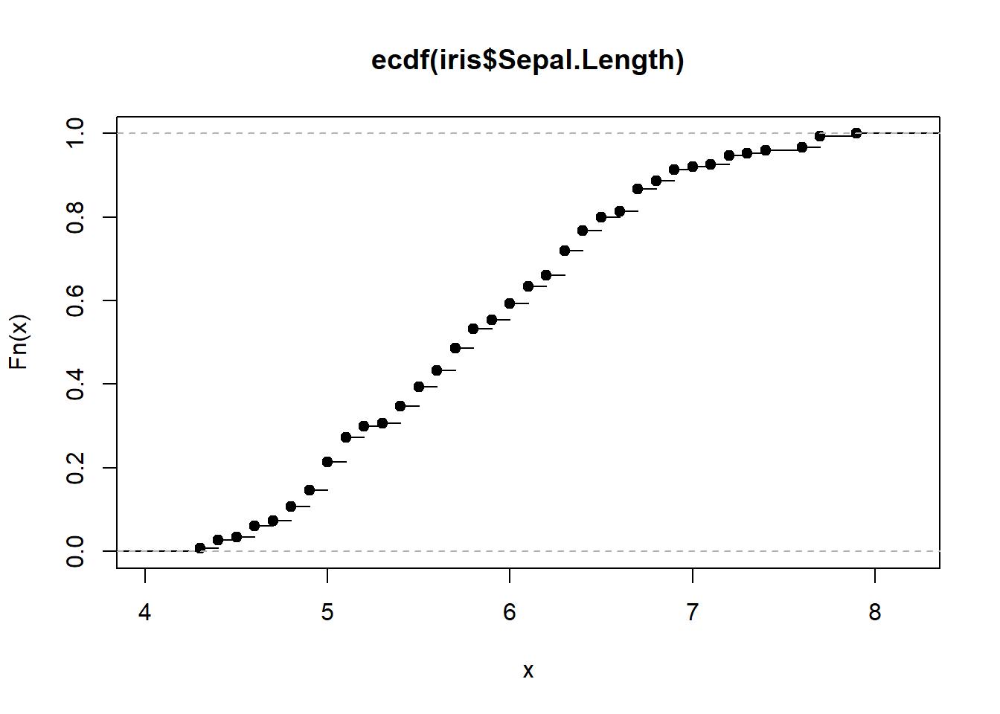
# 绘制简单的累积分布函数图展示某一列数据分布情况1.1.2 第二节
1.1.3 统计分布
正态分布 指数分步 γ(伽玛)分布 weibull分布 F分布 T分布 β(贝塔)分布 χ²(卡方)分布 均匀分布
介绍这些分布跟NGS组学的关联
1.2 常用统计方法
1.2.1 差异分析
1.2.2 生存分析
1.2.3 主成分分析
1.2.4 进化树
1.3 常用可视化工具
1.3.1 网页工具
1.3.2 本地软件
IGV等
1.3.3 R绘图系统
这部分内容主要从总体上介绍R的两大作图系统：传统绘图系统和grid绘图系统。尽管这部分内容不会详细介绍如何去绘制某一种具体的图形，但是了解这部分知识却能帮助你在日后作图时根据需求修改已有的绘图工具。
无论是传统绘图系统还是grid绘图系统，它们都是建立在grDevices包的基础上。grDevices被称之为绘图引擎，提供了一系列R中的基本绘图函数，负责绘图参数和图片输出，并且几乎所有的高级的绘图函数都是建立在它的基础上。虽然它如此重要，功能十分强大，但但是由于太过底层，一般只有R包开发者才会深入研究。
建立在绘图引擎之上，有两套互斥的绘图包：graphics包和grid包，将R的绘图功能从主体上一分为二。
传统绘图系统：graphics包之所以称其为传统绘图系统，是因为它实现了很多S语言（S语言由贝尔实验室开发并投入商用）所使用的绘图工具，比如说能用于绘制散点图和条形图的plot()，能用于绘制饼图的pie()，能用于绘制条形图的barplot()，而且每一个作图函数都提供了大量的图形参数用于修改图形。我们可以通过library(help="graphics")查看有哪些绘图函数，使用demo("graphics")了解传统绘图系统能绘制哪些图形。
GRID绘图系统: grid包与传统绘图系统不同，它不负责提供完整的图形函数。它的强大之处在于提供了基于视图概念定位区域的强大能力，相当于将R变成了Photoshop，也就是意味着你可以将图形视为不同区域元素的叠加，也意味着你可以做出非常复杂的图形，比如说下图
library(grid)
grid.newpage()
grid.circle(x=seq(0.1,0.9,length=100),
y=0.5 + 0.4*sin(seq(0,2*pi,length=100)),
r=abs(0.1*cos(seq(0, 2 *pi, length=100))))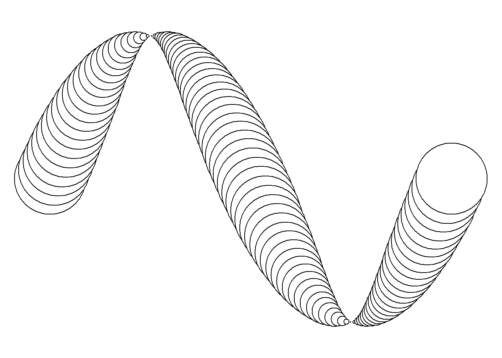
# 图形来自于R会图形系统（第二版）不过人们基本上不会直接使用grid绘制统计图形，一般是采用基于画笔系统的lattice包或基于图形语法的ggplot2。 你或许会问，“知道lattice和ggplot2是基于grid对今后作图由什么帮助吗？”。这里就谈及一点，你可以使用grid定制ggplot2输出，也就是将多幅图形集中在一起.
library(ggplot2)
grid.newpage()
pushViewport(viewport(x=0, width=1/3, just="left"))
print(ggplot(mtcars, aes(x=vs)) +
geom_bar(),
newpage=FALSE)
popViewport()
pushViewport(viewport(x=1/3,width=2/3, just="left"))
print(ggplot(mtcars, aes(x=disp, y=mpg)) +
geom_point(aes(color=drat)),
newpage=FALSE)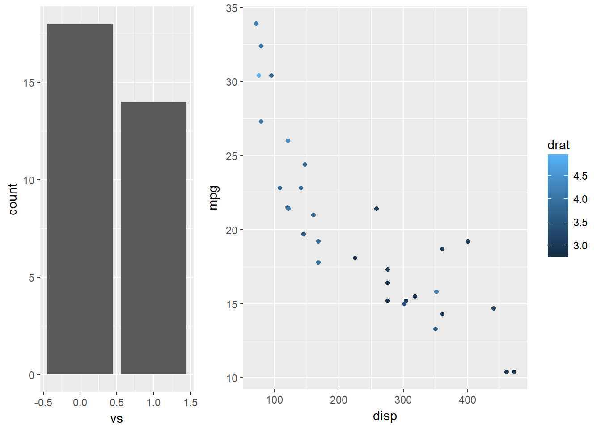
以上仅仅R语言图形系统的简单介绍，如果你只是想要绘制简单的图形，你只要继续看如何通过Google来使用ggplot2可视化 这一篇就够用了。但是如果你希望用R，而不是PS和AI，去随心所欲绘制出任何图形，那么你需要至少看完如下3本书：
1.4 可视化举例
1.4.1 表达矩阵可视化大全
无论是芯片数据，还是高通量测序，结果总能得到每个样本的基因表达量数据。而将这些数据导入到R语言，就能得到一组表达量矩阵。对于这组数据，至少可以绘制如下图形 - 箱形图(boxplot) - 小提琴图(vioplot) - 柱状图(histogram) - 密度图(density) - 配对图(gpairs) - 聚类图(cluster) - 主成分分析(PCA) - 热图(heatmap) - 火山图(volcano plot)
在绘制这些图形之前，首先需要先安装加载一系列包
if (! require('corrplot')) {install.packages("corrplot"); require('corrplot') }
if (! require('gpairs')) {install.packages("gpairs"); require('gpairs') }
if (! require('vioplot')) {install.packages("vioplot"); require('vioplot') }
if (! require('tidyverse')) {install.packages("tidyverse"); require('tidyverse') }
source("http://bioconductor.org/biocLite.R")
if (! require('CLL')) {biocLite("CLL"); require('CLL') }随后是加载绘图所需的表达矩阵数据。分析所用的表达矩阵数据对象(ExpressionSet obejct)由Affymetrix的 AffyBatch 对象经 gcrma 处理后获得。
原数据为22组样本的12,625个基因表达状况，根据疾病状态分为两组：stable 或 progressive，此处仅选取前8个样本用作演示。
注: gcrma是Bioconductor中一个与芯片数据处理相关的包,主要功能是利用序列信息调整背景.
data("sCLLex")
sCLLex <- sCLLex[,1:8] # 样本数过多，仅选取前8个
group_List <- sCLLex$Disease # 获取分组信息
exprSet <- exprs(sCLLex) # 获取表达矩阵
head(exprSet, n=3)## CLL11.CEL CLL12.CEL CLL13.CEL CLL14.CEL CLL15.CEL CLL16.CEL
## 1000_at 5.743132 6.219412 5.523328 5.340477 5.229904 4.920686
## 1001_at 2.285143 2.291229 2.287986 2.295313 2.662170 2.278040
## 1002_f_at 3.309294 3.318466 3.354423 3.327130 3.365113 3.568353
## CLL17.CEL CLL18.CEL
## 1000_at 5.325348 4.826131
## 1001_at 2.350796 2.325163
## 1002_f_at 3.502440 3.394410之后，还要利用tidyr::gather将原本的宽数据重塑成长数据。这一步被称之为数据规整化，是数据分析流程中至关重要的一步，详见Hadley所写的Tidy data 一章。当前数据存在问题是：列名(CLLxx.cCEL)应该是变量名，而这里却是变量的值。
exprSet <- as.data.frame(exprSet)
exprSet$probe <- row.names(exprSet)
exprSet_L <- tidyr::gather(exprSet, key='sample',value='value',CLL11.CEL:CLL18.CEL)
exprSet_L$group <- rep(group_List, each=nrow(exprSet))
rbind(head(exprSet_L,2), tail(exprSet_L,2))## probe sample value group
## 1 1000_at CLL11.CEL 5.743132 progres.
## 2 1001_at CLL11.CEL 2.285143 progres.
## 100999 AFFX-YEL021w/URA3_at CLL18.CEL 3.651349 stable
## 101000 AFFX-YEL024w/RIP1_at CLL18.CEL 2.914602 stable经过这基本处理，便能得到以探针，样本，处理结果和组别信息为列名的数据框。
完成了上述准备工作后，先用箱形图，小提琴图，柱状图，密度图了解各个样本表达数据的分布情况。
library(ggplot2)
library(grid)
grid.newpage()
pushViewport(viewport(x=0, width=1/2, just="left"))
p1 <- ggplot(exprSet_L,aes(x=sample,y=value,fill=group)) + geom_boxplot() +
theme(axis.text.x = element_text(angle=90, hjust=1, vjust=.5))
print(p1, newpage=FALSE)
popViewport()
pushViewport(viewport(x=1/2, width=1/2, just="left"))
p2 <- ggplot(exprSet_L,aes(x=sample,y=value,fill=group)) + geom_violin() +
theme(axis.text.x = element_text(angle=90, hjust=1, vjust=.5))
print(p2, newpage=FALSE)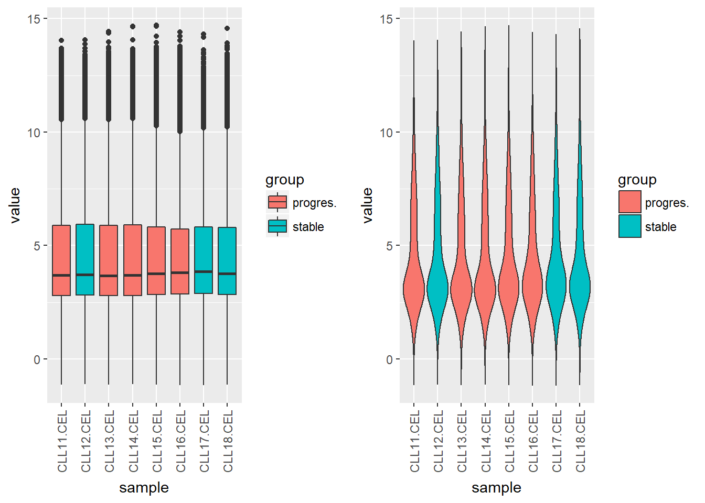
其中小提琴图可以认为是箱形图与核密度图的结合体。
library(ggplot2)
# 条形图
p3 <- ggplot(exprSet_L,aes(value,fill=group)) + geom_histogram(bins = 200)+facet_wrap(~sample, nrow = 4)
print(p3)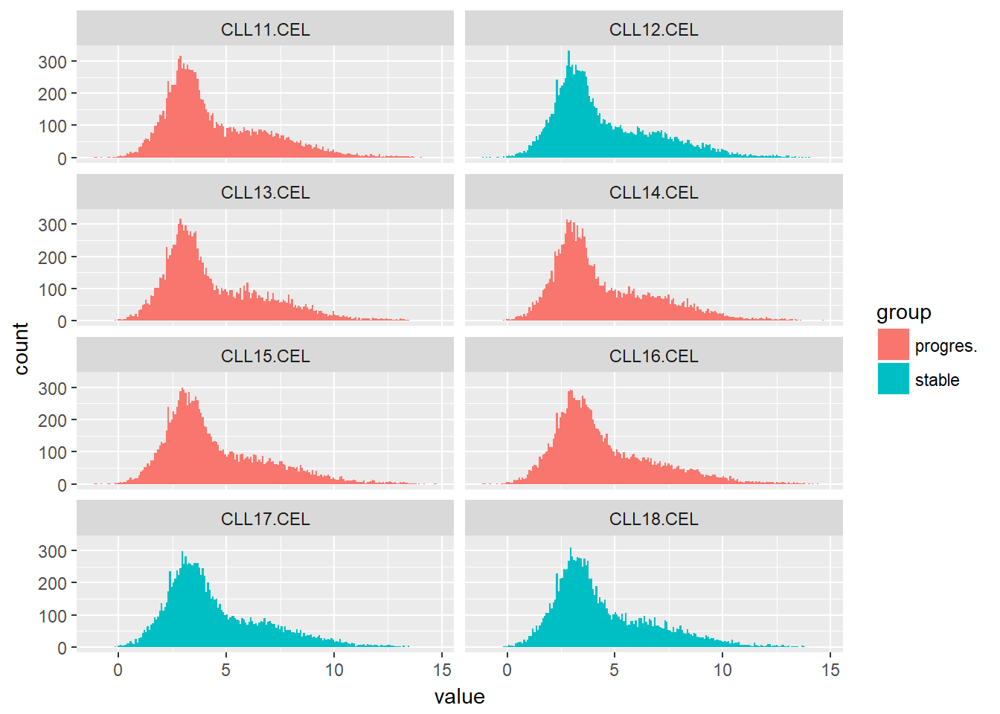
# 密度图
p4 <- ggplot(exprSet_L,aes(value,col=group)) + geom_density()+facet_wrap(~sample, nrow = 4)
print(p4)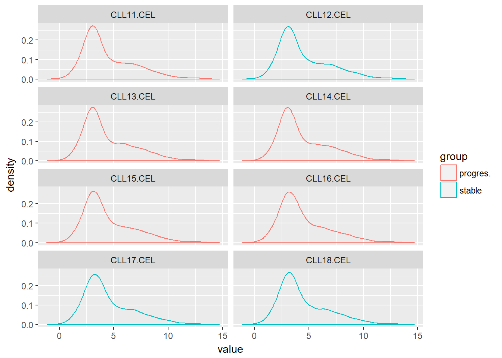 这里使用了ggplot2的分面特性，fact_wrao()为每一个变量都绘制相应的图。如果不使用分面，还可以观察不同分组数据在同一幅图中的分布情况。
p5 <- ggplot(exprSet_L,aes(value,col=group)) + geom_density()
print(p5)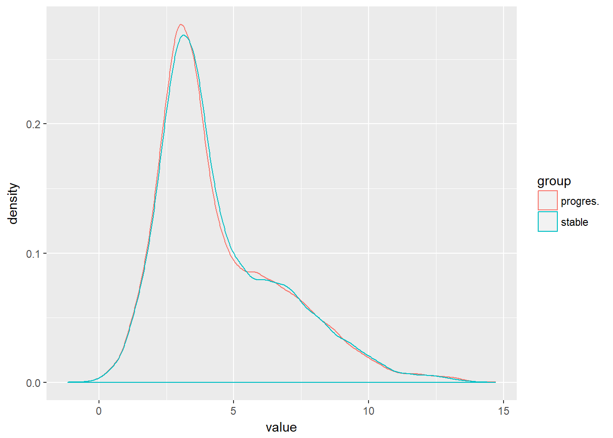
上面提及的四类图形描述的都是每一组样本各自的情况，而下面谈到的gpairs和cluster则是探索不同变量之间的关系。
gpairs能够产生分组变量两两之间的关系。要求的输入数据为宽数据，即每列代表不同的细胞，每行表示不同的基因。
library(gpairs)
gpairs(exprSet[,1:8]
#,upper.pars = list(scatter = 'stats')
#,lower.pars = list(scatter = 'corrgram')
)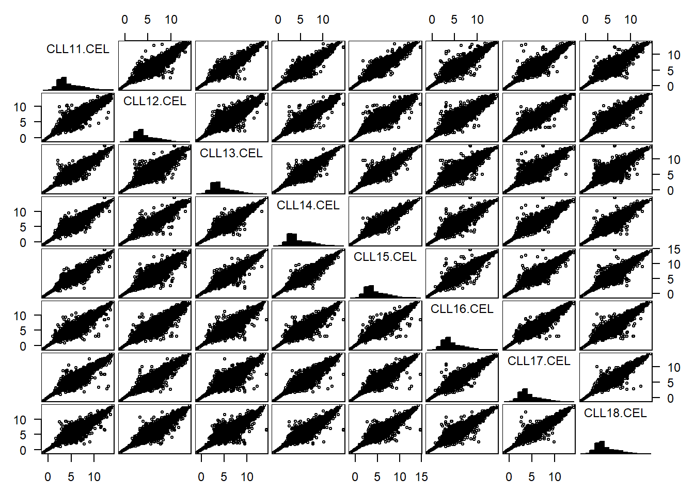
聚类分析通过计算基因表达量之间的欧几里得距离，从而对不同样本进行分类。
out.dist=dist(t(exprSet[1:8]),method='euclidean')
out.hclust=hclust(out.dist,method='complete')
plot(out.hclust)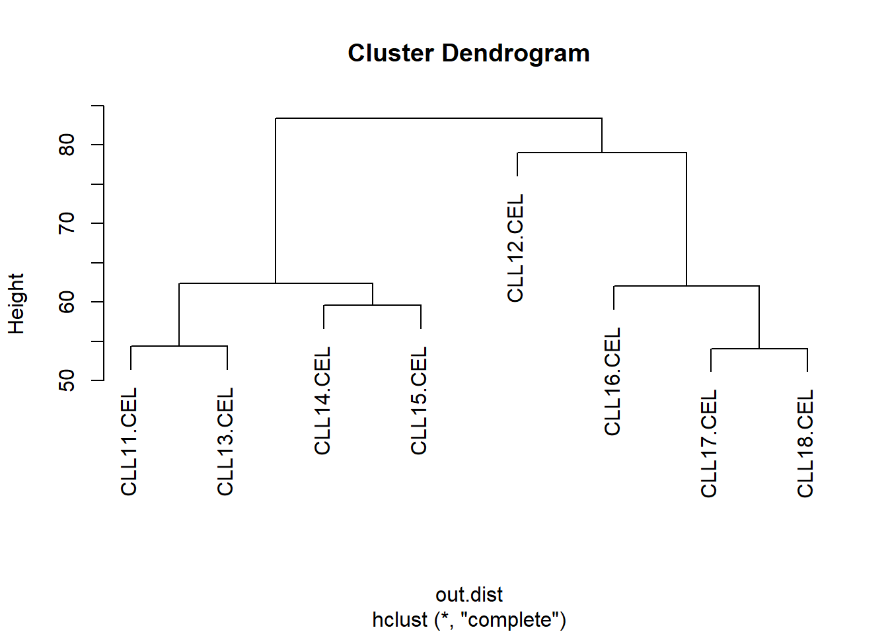
热图(heatmap)类似于散点图，只不过利用颜色表征数据的大小，因此